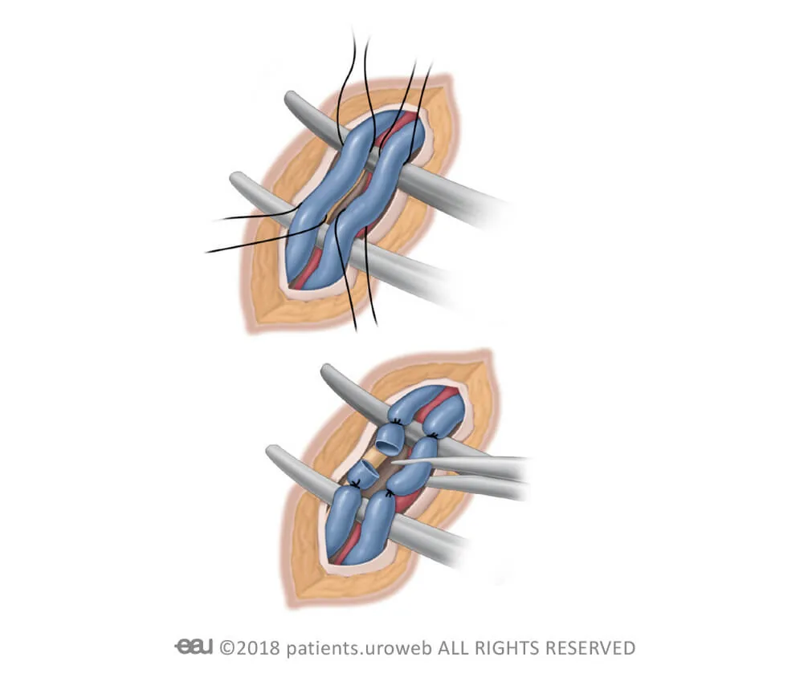
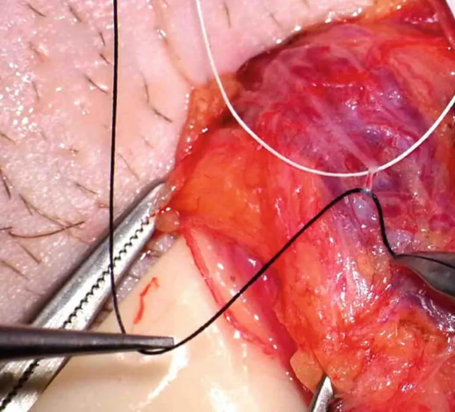
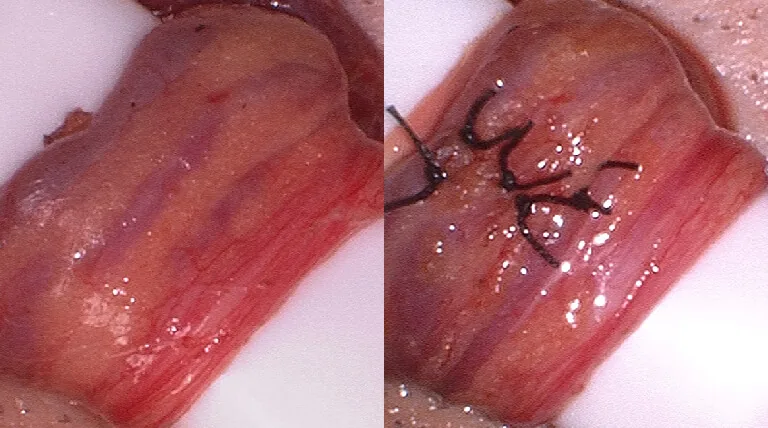
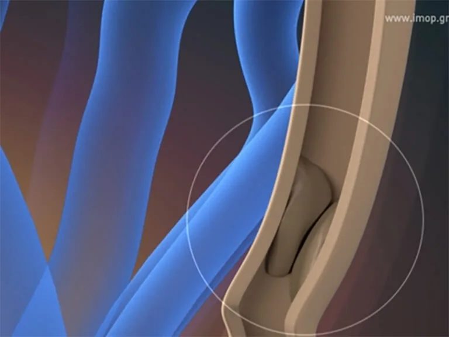
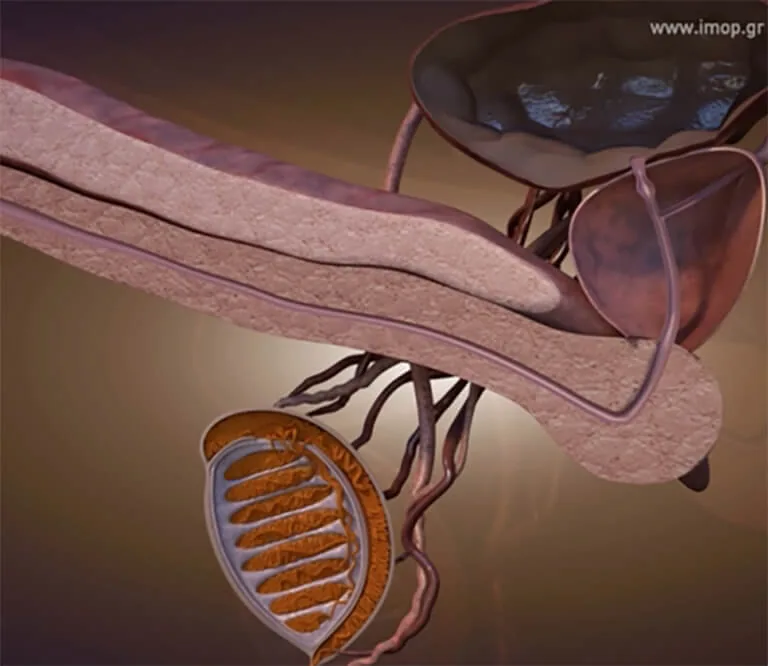

When surgery is indicated
The treatment of varicocele is exclusively surgical. The European Association of Urology (EAU) guidelines are summarized as follows:
- Offer adolescents surgery for varicocele associated with small testicular size (size difference >2 ml or 20%), which should be confirmed at two consecutive visits six months apart.
- Surgery is necessary in infertile men with clinical varicocele, abnormal sperm parameters and otherwise unexplained infertility in a couple where the female partner is healthy.
- Surgery is indicated in men with increased DNA fragmentation with otherwise unexplained infertility or who have suffered from failed assisted reproductive techniques, including recurrent pregnancy loss, failure of embryogenesis and implantation
The surgery is not urgent. The spermogram will determine the need for surgical intervention.
The operation
Surgery usually involves resection of the veins, specifically the internal spermatic veins.

This approach diverts testicular venous drainage to the internal venous system, which contains competent valves, thereby limiting venous reflux. The operation can be performed by laparoscopic or open approaches, including the microsurgery that has prevailed in the last 3 decades.
Why microsurgery
And this is because 6 meta-analyses have shown that the microsurgical approach presents the lowest recurrence rates (1% vs. 10-12%) and complications (hydrocele 0.4% vs. 7% with the classic technique), combined with the highest pregnancy rates and improved sperm parameters.
Results of 6 meta-analyses

Microsurgery is technically demanding and requires an experienced surgeon and takes longer. However, it offers a faster return to work and minimal post-operative pain.

Rehabilitation after Surgery
The pain from this surgery is generally mild and lasts a few days. The Urologist may prescribe antibiotics for 2-3 days. You will likely be able to return to work about 3-4 days after surgery and begin exercise about 3 weeks after surgery.
You can safely return to daily activities and in one week have sexual intercourse immediately after the removal of the stitches 6 days after the operation.
- 2–3 daysThe Urologist may prescribe antibiotics for 2-3 days.
- 3–4 daysReturn to work.
- 6 daysRemoval of the stitches.
- 1 weekSexual intercourse, immediately after the removal of the stitches.
- 3 weeksExercise.
What is Azoospermia?
In some cases, varicocele coexists with azoospermia. Absence of spermatozoa in semen is called azoospermia.
It is divided into occlusive and non-occlusive.
Obstructive azoospermia
Obstructive is due to a blockage, usually due to old inflammation, in the path that sperm follow from the testicles to the urethra.

The most common inflammation that causes obstructive azoospermia is inflammation of the epididymis, that is called epididymitis. It is an inflammation characterized by swelling of the testicles and severe pain that leads to the doctor.
But also inflammations of the accessory genital glands can have effects, especially prostatitis when they become chronic due to insufficient treatment.

Non-obstructive azoospermia
Non-obstructive is due to dysfunction within the testicles. Its possible causes are many.
Sperm freezing before surgeryIn patients with varicocele and severe oligo (small number) – astheno (minimum motility) – terato (pathological morphology) spermia, it is possible to present azoospermia after varicocele surgery. That is why it is recommended to freeze sperm before surgery.